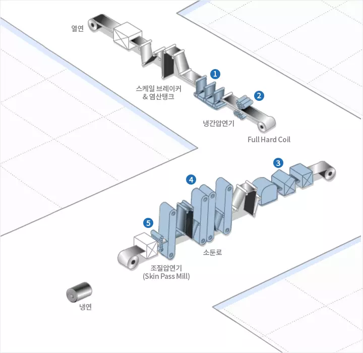
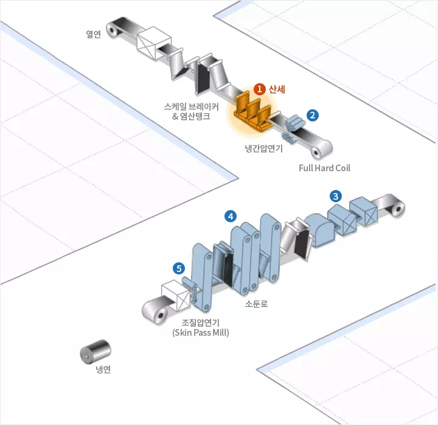
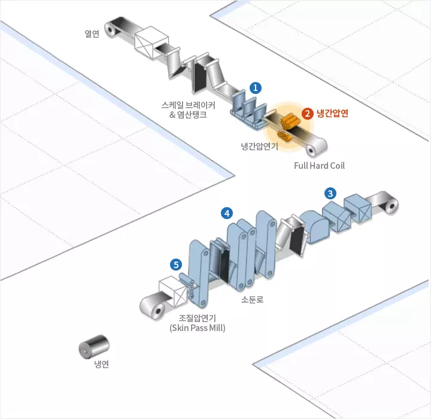
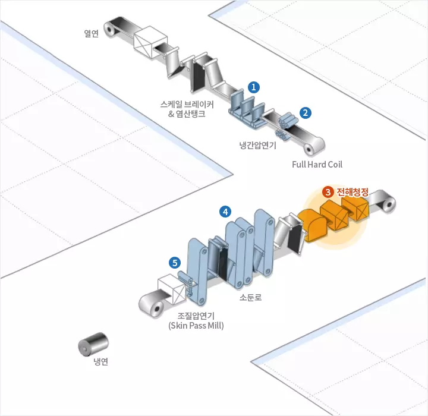
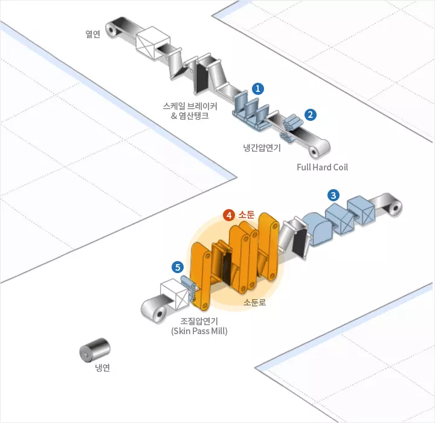
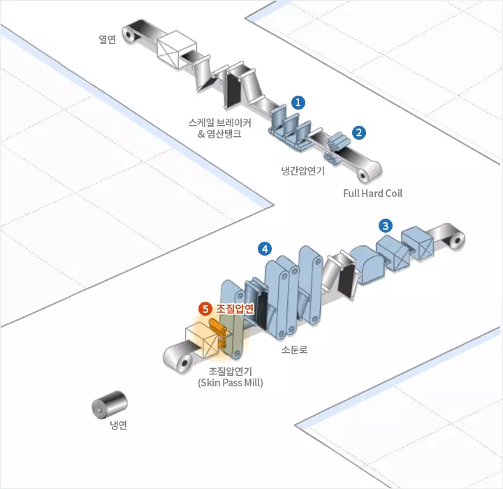

PRODUCTION
제조공정
제조공정
열연
냉연
용융아연도금
전기아연도금
>
냉연
1. 산세
산세공정은 열연코일을 스케일 브레이커 및 염산탱크에 통과시키는 과정을 통해, 최종 냉연제품의 표면결함 원인인 산화물 피막을 제거하는 공정입니다.
2. 냉간압연
용도에 맞는 두께와 재질 확보를 위해 통상 40~90%의 압하율로 진행되며, 자동 두께 제어, 자동 형상 제어 등의 첨단 제어 기기를 이용합니다.
3. 전해청정
소둔에 앞서 냉연코일을 알칼리 용액에 통과시켜 기계적, 화학적 반응을 통해 압연유와 오염물질을 제거하는 공정입니다.
4. 소둔(열처리)
급속가열 및 급속냉각으로 심가공용부터 고장력강까지 제조할 수 있어 생산성이 뛰어난 제조 방법입니다. 연속 소둔과 상자 소둔 방법이 이용됩니다.
5. 조질압연
판 위에 약 1% 정도의 압하를 가하여 스트레처, 스트레인 등의 결함을 제거하고 적당한 조도를 부여하여 미려한 표면을 지닌 제품으로 생산합니다.





